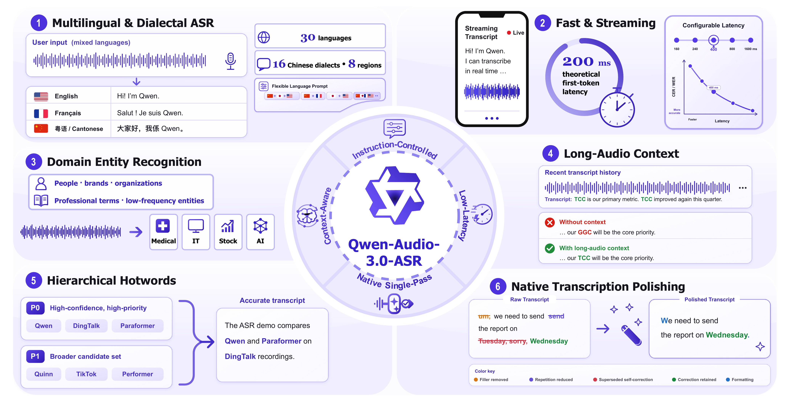
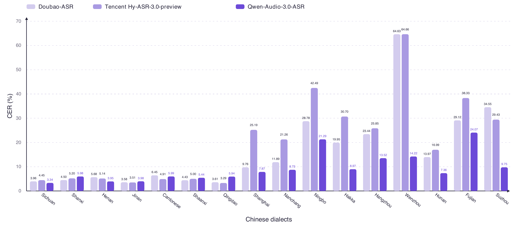

Macro CER on the internal 16-dialect evaluation suite.
Hear more.
Miss less.
A large-scale, instruction-controlled ASR model for multilingual speech, 16 Chinese dialectal varieties, long-context transcription, and production-grade entity recognition.
- 30
- languages
- 16
- Chinese dialects
- Streaming
- Real-time transcription

Reported evaluation
One model,
balanced performance.
Macro error rate on Common Voice 15 across the evaluated languages.
Industry domains where the model reports the outright highest entity recall, with one additional tie.
Interactive audio atlas
Listen across dialects and languages.
Choose a location on either map to hear the original sample and read its source-language transcript with an English translation.
30supported languages
16dialectal varieties
Select a location
Japanese · Japan
日本語
Choose a marker on the map or a name below.
Flexible language prompting
Combine target languages at runtime.
language_hints = ["zh", "ja", "en"]
Browse all 30 supported languages


Fast & streaming
Listen while the transcript appears.
Play the 18-second Beijing-to-Hangzhou request and watch the transcript appear continuously in a clean side-by-side streaming interface.
Interactive streaming playbackDoubao Voice InputvsQwen-Audio-3.0-ASR
Beijing → Hangzhou travel requestVoice-timbre adjusted · original comparison replay
0:00/0:18
DOUBAO VOICE INPUTQWEN-AUDIO-3.0-ASR
Evaluation evidence
Results, where they support the story.
Each result view answers a specific performance question; the complete reported tables remain available below. Lower CER/WER is better, while higher recall and consistency are better.
Evaluation note. Dialect and industry-domain evaluations use internal test sets. Public benchmark results in Panel A are taken from official sources, while API systems in Panel B use a unified evaluation pipeline.
Table 1 Public Chinese and English ASR benchmarks
Table 2 Multilingual benchmark results
Table 3 Hotword recall with and without conditioning
Table 4 Long-audio contextual corrections
Samples from the report and launch material
See what the controls change.
Explore context corrections, entity recall, hotword gains, and native polishing without leaving the page.
Model experience
Choose the deployment profile.
Open the official Model Studio documentation for short-form, file-transcription, or real-time streaming integration.
01 / Short-form
Qwen-Audio-3.0-ASR-Flash
Speech recognition for audio up to five minutes.
Open documentation ↗ 02 / FileQwen-Audio-3.0-ASR-Flash-Filetrans
Offline transcription for recorded audio files.
Open documentation ↗ 03 / StreamingQwen-Audio-3.0-ASR-Flash-Streaming
Real-time speech recognition over WebSocket.
Open documentation ↗